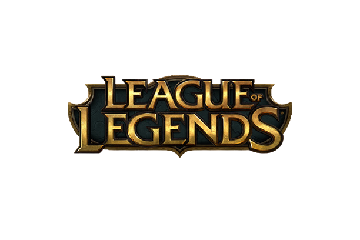
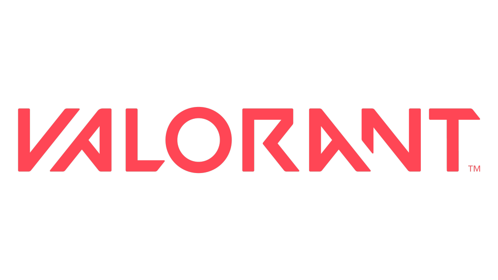

JOGOS
Fique por dentro das ultimas noticias do seu jogo favorito

LEAGUE OF LEGENDS
League of Legends é um jogo eletrônico online gratuito, do gênero batalha multijogador, desenvolvido e publicado pela Riot Games em 2009, para os sistemas Microsoft Windows e Mac OS X, inspirado no modo Defense of the Ancients do jogo Warcraft III: The Frozen Thron.

COUNTER STRIKE
Counter-Strike é uma série de jogos eletrônicos de tiro em primeira pessoa multiplayer, no qual times de terroristas e contra-terroristas batalham entre si, respectivamente, realizando um ato de terror e prevenindo-os. A série iniciou-se no Windows em 1999 com a primeira versão do Counter-Strike.

VALORANT
Valorant é um jogo eletrônico multijogador gratuito para jogar de tiro em primeira pessoa desenvolvido e publicado pela Riot Games.